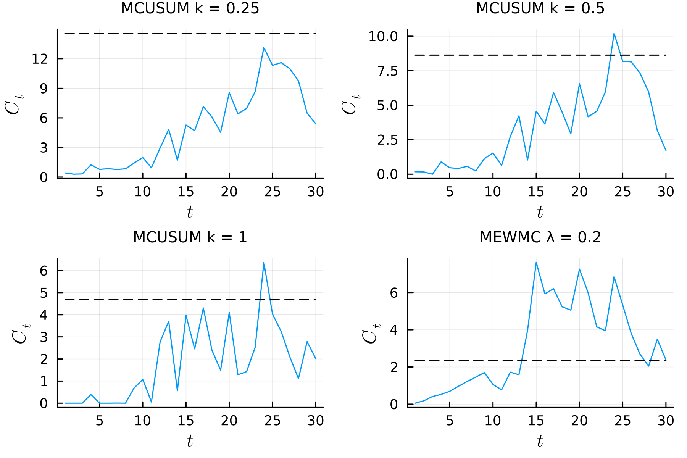

Jointly Monitoring the Mean and Covariance Using a Multi-Chart Scheme
Here, we provide an example of multiple control charts being run simultaneously. We consider sequential monitoring of the data from Example 7.7 of qiu2013.
First, the required packages are loaded
using StatisticalProcessMonitoring, LinearAlgebra, Random, Distributions, CSV, DataFrames, PlotsIn the example, three quality variables resulting from a production process are monitored for changes. Under IC conditions, the quality variables follow the $N_3(\bm{0}, \Sigma_0)$ distribution, where $ \Sigma_0 = \begin{pmatrix} 1.0 & 0.8 & 0.5\ 0.8 & 1.0 & 0.8 \ 0.5 & 0.8 & 1.0 \end{pmatrix}. $
First, we set the seed for replicability.
julia> seed = 54397858713
julia> Random.seed!(seed)Then, we initialize the distribution of the observations under IC conditions.
julia> μ = [0, 0, 0]
julia> Σ = [1.0 0.8 0.5; 0.8 1.0 0.8; 0.5 0.8 1.0]
julia> DIST = MultivariateNormal(μ, Σ)Next, we define three CUSUM charts with allowance constants of 0.25, 0.5, and 1, respectively. Additionally, we define a MEWMC control chart with a smoothing constant of 0.2.
julia> p = length(μ)
julia> STATS = (MCUSUM(k = 0.25, p = p), MCUSUM(k = 0.5, p = p),
MCUSUM(k = 1.0, p = p), MEWMC(λ = 0.2, p = p))To account for the mean and covariance of the distribution, the four control charts are applied to the standardized observations, $ \bm{Z}t = \Sigma0^{-1 / 2}\bm{X}_t. $
We use the type LocationScaleStatistic to standardize observations in location-scale families.
julia> Σ_sqm1 = inv(sqrt(Σ))
julia> EST_STATS = Tuple(LocationScaleStatistic(s, μ, Σ_sqm1) for s in STATS)Control charts will signal an alarm whenever their values cross their respective upper control limits $\text{UCL}_j$.
julia> LIMS = Tuple(OneSidedFixedLimit(1.0, true) for _ in 1:4)To find appropriate control limits, we set the nominal median run length to 200.
julia> NM = QRL(200, 0.5)We generate Phase II observations from the IC process distribution.
julia> PH2 = Phase2Distribution(DIST)Then, we create the ControlChart object and find the control limits.
julia> CH = ControlChart(EST_STATS, LIMS, NM, PH2)
julia> h = bootstrapCL!(CH)
julia> print(h)
(h = [14.568353665174286, 8.627690357206408, 4.677555568948659,
2.360499495019121], iter = 8, status = "Convergence")We then load the Phase II data (available at this Zenodo link) and plot the results.
julia> data = CSV.read("example77.csv", DataFrame)
julia> xnew = Matrix(data)[:, 1:3]
julia> proc = apply_chart(CH, xnew)
julia> plt = plot_series(proc, dpi = 300, label = "", xlab = L"t",
ylab = L"C_t", subtitles = ["MCUSUM k = 0.25", "MCUSUM k = 0.5",
"MCUSUM k = 1", "MEWMC λ = 0.2"])